来源：https://vub1ul9ufi.feishu.cn/docx/QPbrd8cv2oebJDx0F96cH3qVnCd
夜校起源于上海，是z府参与半公益的兴趣培训， 500 元 12 节课，主打一个性价比
目的是增加青年下班后的去处，丰富大家的业余生活，顺便让大家学习一些技能。
然后它面向全上海市民，所以就需要提前抢票，就像抢那个火车票一样，只要一发售，瞬间就秒没，上了好几次热搜，有需求就有市场，在公开报道之后，北京也开始跟进了。北京跟进的是什么呢？
北京跟进的是一些民间组织，就是个人在小红书上开了账号，开始拿夜校这个话题去圈流量，再整合一下市场上的兴趣培训机构，说白了就是整合资源，空手套白狼，本质是个中介模式，做的是一个撮合生意
有了流量，再联系商家谈优惠，最后收钱，用户去上课。
准确来说是10月30日中午，无意间刷风向标看到圈友发的信息，介绍上海夜校，北京夜校，他们是怎么做的？我感觉这个是可行的。
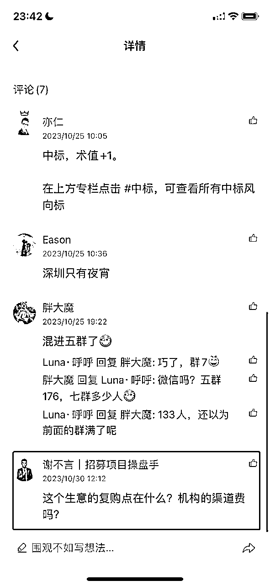
为什么呢？是因为在小红书上引流，我感觉小红书任何类目，都能玩得转，任何类目我都能搞到流量。
所以想试一下，而且这群用户是一个青年群体，正好最近也在组织一个青年俱乐部。想一想也是对业务互补的，既然有帮助，那就干吧，对不对？
第二天一早上班，我就安排新媒体运营小姐姐，说今天给你布置个任务，然后咱们这边测试一个新项目，需要怎么做，刚好我们手里面有两个养好的新号，就直接改名字，改成济南什么夜校或者济南什么青年俱乐部，
前三个月就只单纯的是一个中介模式，赚取差价和机构的返佣，据我所知北京夜校500元抽佣20%、正价课抽佣10%。
往后信任关系到位了，加上流量基础有了，你就可以搞俱乐部，搞线下活动了。其次你可以围绕女孩子的需求做好物团购、旅游团，
还可以衍生嫁接其他项目，比如同城相亲，同城医美，变现模式取决于操盘手的商业认知。
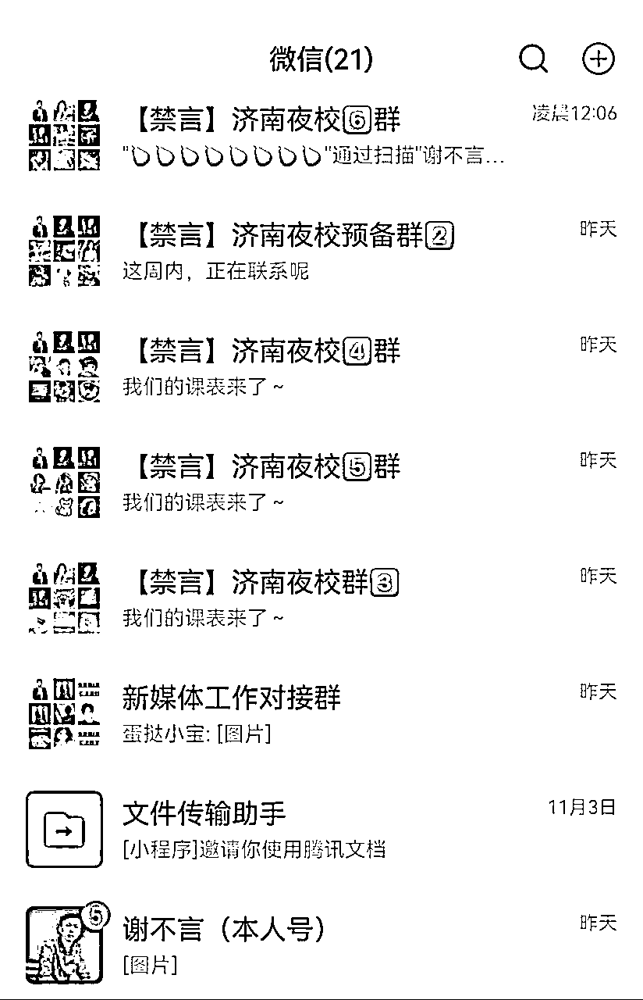
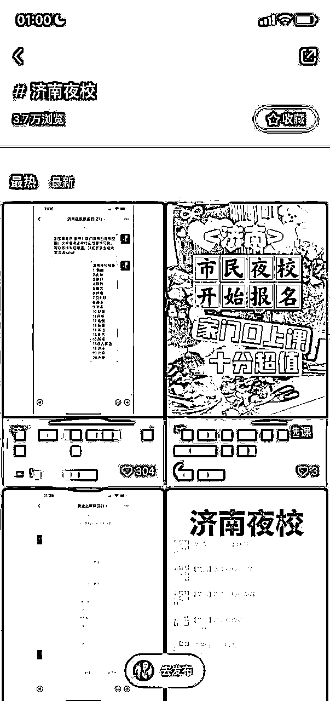
熟悉我的人都知道，谢不言是一个小红书矩阵流量操盘手，从21年入局小红书，高峰时每天能引流私域1000+精准流量，这次我全程没有参与，只是把运营思路告诉了一个新来不到1月的实习生，两个账号一天能加满微信群，7天引流1200多人，整个同城话题被我霸屏，可见站在风口上，流量是多么的恐怖
第1种产品服务图，适合刚开始冷启动
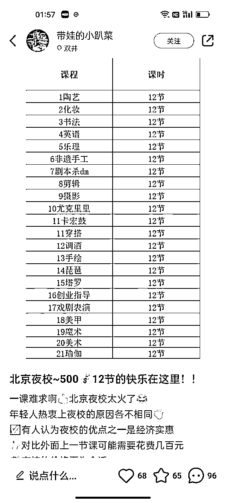
第2种微信群聊天记录接龙截图，适合已经有了小规模流量
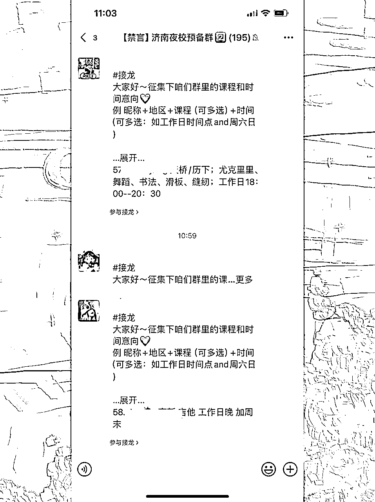
第3种学员上课反馈截图，类似于成功案例
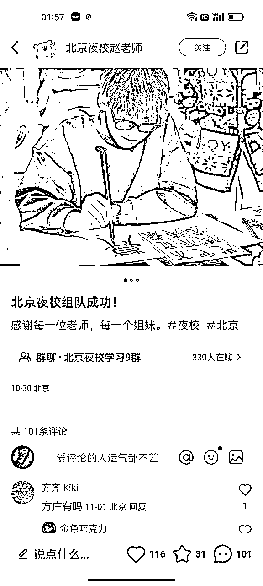
一条笔记带来200多的流量，肯定不能直接导到微信个人号上，因为这样容易封号，所以呢，我就直接导流到微信群，总共用了三个步骤
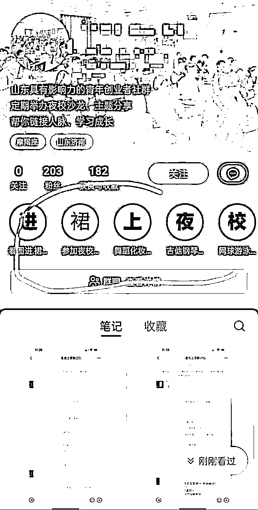
第1种主页瞬间引导
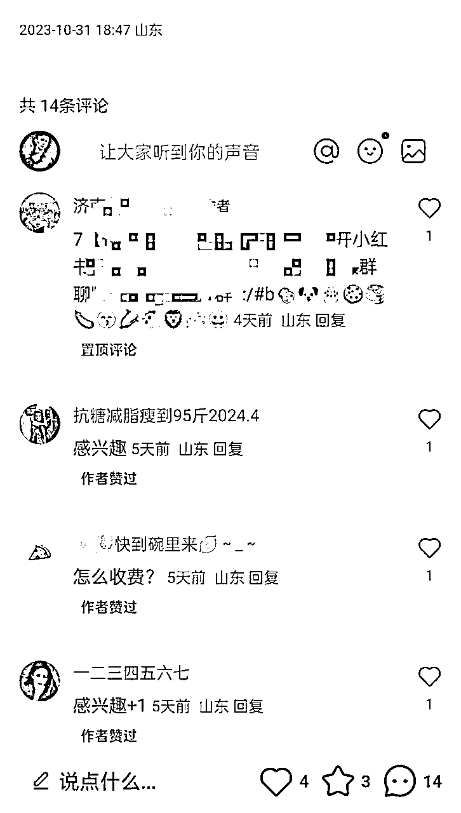
第2种笔记评论区置顶邀请码
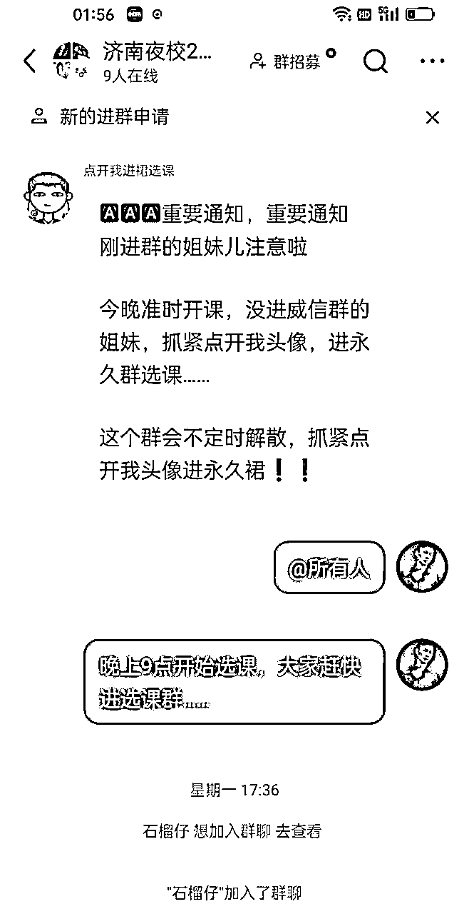
第3种小助手粉丝群内引导
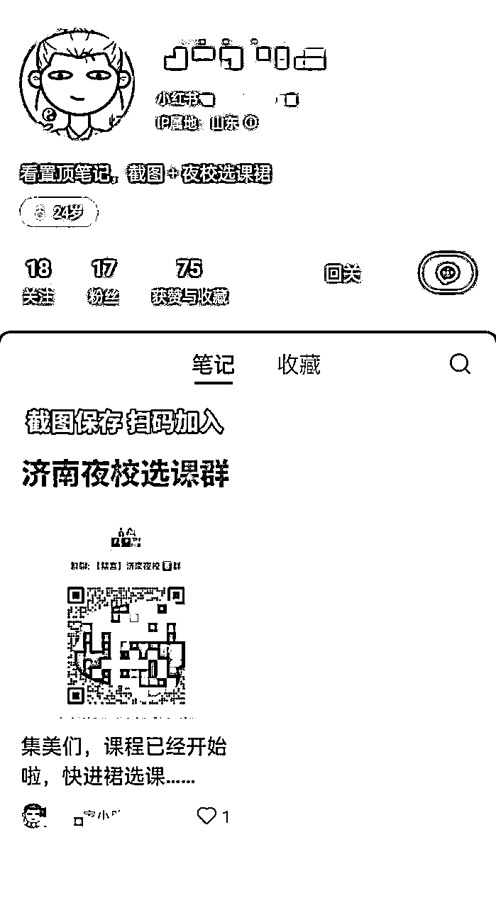
先找一个小号，把群二维码，通过发笔记的形式展示到主页，然后进粉丝群不停的发引导话术，引导新用户点开你的主页扫码进微信群。
大家都在用的方式，把课程信息编辑成一段文案发在群里，然后建一个单独的机构上课群，引导感兴趣的用户进上课群，缴纳50元上课定金，第1节课上完之后再补齐其余尾款。
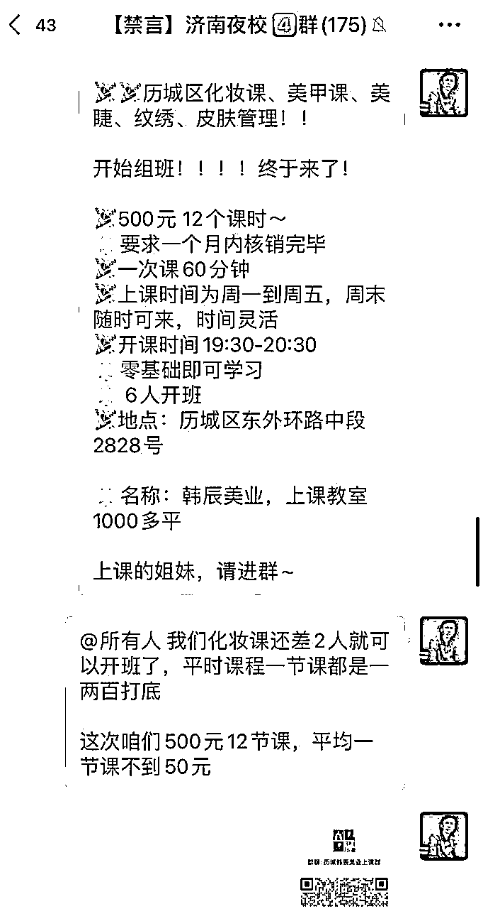
万物不都为我所有，但都为我所用，前10家机构谈合作是最难的，因为你没有成功案例，我是通过美团大众点评搜索商家，然后通过线上电话去谈判，这里最重要的一点就是要给商家释放确定性，人都喜欢追逐确定性，给大家贴上一段我自己的电话话术：
“你好，老板是xx机构吗? 我这边是咱们本地一家青年俱乐部，线上有2000个注册会员,分布在咱们各个县区，现在有这么一个情况，就是我们这里有十多个小姑娘想学习xxx ，想问一下咱们有没有团课或者小班教学？我们这边是每个月都有十多个人想学习，并不是一次性的哈”
老板这里都会问咱们怎么合作呢？是我们派老师去你那里教学，还是你们到店来，我通常回答是“不需要老师过来，我们直接到店里去就可以，然后你们这边一节团课多少钱”
具体的谈合作话术比较多，这里只展示部分，想了解更多的可以私下找我要。
等老板报完价之后，我们心里就有数了，然后再说我们的底牌500元12节课，具体的谈判空间需要你随机应变。
加到微信群之后，我让他们填写了调查问卷，先摸清用户画像，90%的人都是女性上班族，薪资60%在4-7k , 然后统计分布地区，想学的兴趣课程，为我接下来的拓展所铺垫，想要做夜校的朋友可以找我拿调查问卷链接~
在开始发布课程之前，用户是对你的信任值和期望值是最大的，所以不要浪费，我会在群公告里说拉5人减免多少钱、拉10人进群减免多少钱，如果你有时间，还可以做一下裂变版的海报，让用户转发朋友圈为你扩大势能，裂变的这一步做了是锦上添花，不做也影响不大
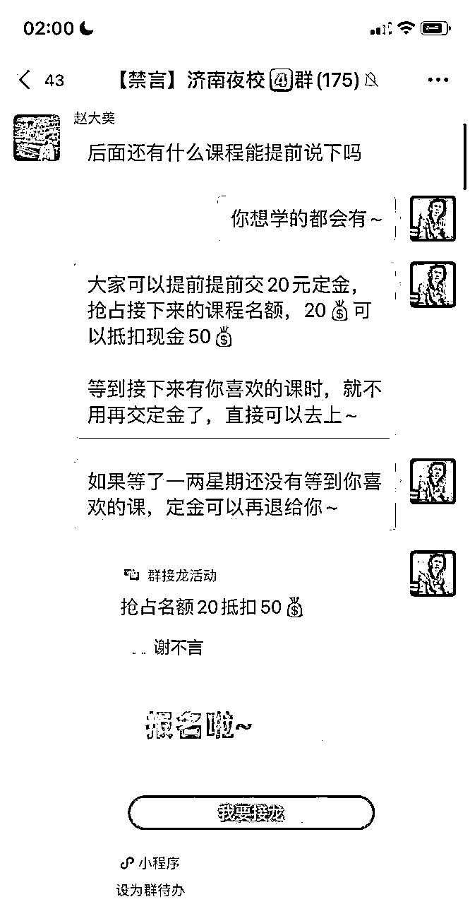
课程发布之后有人欢喜，有人失落，有人报名，还有人观望，这都是正常现象，于是我趁着课程发售的小高潮，开始推行了预收款，先缴纳20元的定金，可以抵扣50元，且可以提前抢占上课名额，并有新课发布的优先知情权。
这一个是正在做的事情，用快团团进行收款，可以在大群内详细展示机构的介绍、照片和视频，同时还可以提高转化的效率，用户直接点链接付款就可以，不用再进小群，一对一的私聊转账。
预期管理没有做好，
用户是奔着夜校来的，有一部分人心理预期是政府机构或者能免费学习，到群里一看，原来你是个中介，那他心里就会产生落差，而且人心的阴暗的地方，总是在于容易拿最大的恶意揣摩别人，他们真的会想，你不就是个中介吗，你把我骗过来，原来是想把我卖给其他的机构
所以我们预期管理也很重要，在他刚进群之后，你就得在群公告上说明你是干什么的。我并不是一个企业机构，我并不是一个政府组织，也不是个慈善机构，我们是一个青年俱乐部，把大家召集到一起，组团给商家谈判，谈一个极致性价比的课程，丰富大家业余生活，方便大家去培养一个兴趣爱好，一定要给用户，你与她站在同一战线的感觉。
适合轻创业，没有太大的野心的男孩子，更适合性格活泼开朗，有些社牛的女孩子，毕竟一个月还是能轻轻松松赚两三万的，
做好夜校需要具备什么能力呢？
首先要具备良好的组织协调能力，更考研你的控场能力，随机应变能力，其次这毕竟是个服务者的活，需要你有热情，情绪张力，你是否能够 open 打开自己，你是否能够去链接陌生人时不怯场。，
什么是一个好生意？
第一，流量大且稳定。
第二，客单价高，
第三，毛利润率越高
第四，销转效率高
第五，可复购，
那夜校符合其中哪几点？
虽然夜校现在是个风口，流量挺大，但是他转化路径效率没那么高，客单价也并不高，收费500元，无论商家再怎么谈，你最多能分了一半的利润250元，据我所知北京夜校分佣10、20%
最后就是复购率低，复购在用户上完一个月的课程后，有兴趣继续学习，想要报全程班和私教，这时候咱们可以尝试和机构谈返利，比如方案 10%-30% 都是可以接受的
夜校自身造血能力不足，但可以和同城周边业务嫁接，比如同城相亲、同城医美，然后就是同城俱乐部，举办各种线下活动，带大家一起去吃喝玩乐，去学习成长，去探索各种新事物。
所以我说夜校并不是一个好业务，因为它变现天花板也低，说实话一个月你运营的再牛逼，一个月撑死是5万的利润，除非你加上其他的项目。
夜校变现，取决于什么？第一、你的流量大小。第二、取决于你转化率，
什么决定转化率？转化率取决于你手里握有多少同城商家，只有商家多了，才能撮合成功更多的学员
大胆猜测一下，同城夜校做到最后，一定会演变成线下社交俱乐部，那俱乐部变现通过什么呢？主要的活动变现，
假如你一周搞 7 场活动，平均一场活动来 8 个人，一个人收费150元，假如每人成本是50，净利润是100元，单场变现800元，一周 7场利润共5600元，一月利润22400元，其实这并不算的，边际成本和交付成本太高了。
这项目不适合什么人干，不适合想赚大钱的人干，对，不适合很有野心的人干，不适合大老板干，不适合立马想变现的人看干，不适合没有服务意识只想利己的人干，变它的变现天花板真的没那么高，真的没那么高的，真的没那么高，它是有限的，有限的。
学员肯定里面是会有退费的，那我们预收50或100的定金就是为了让他有所顾忌，上完第1节课之后，这个定金便是不退的。
千万别这样，千万别自己给自己找麻烦，我们不是一个学校，是一个中介，中介就是链接上游，对接下游，一个手机就可以搞定，别搞混了。
肯定会有薅羊毛的人，我们可以通过把收费标准前置，筛选愿意付费的人，
我是谢不言，一个小红书矩阵流量操盘手，真的懂流量，变现是强项，咱们生财圈友自己建了个夜校实操讨论群，如果你对这个项目感兴趣，可以一块来聊聊 okk296 ，一定知无不言，言无不尽。